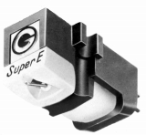
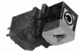
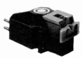
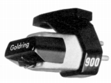
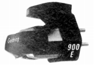
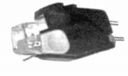
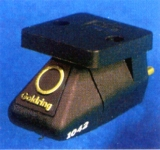
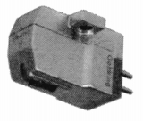
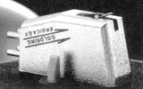
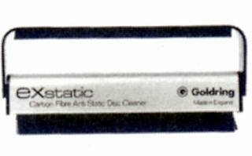

GOLDRING（ゴールドリング）
モノラルのバリレラ型やセラミック型カートリッジの時代からの伝統を持つイギリスの老舗ブランド。最近ではヘッドフォンが話題となることが多いが、1960年代からカートリッジが紹介されていた。本国ではローエンド機からのラインナップをもっているようだが、日本にはって来るのは比較的上級の機種のみである。現在でも、MC型に比べ少量生産に適さないMM型系の上位機種を維持している稀少なメーカーである。
GOLDRING（ゴールドリング）の製品を以下のように分類する。（この分類は個人的な意見で、メーカーの分類ではありません）
�T.カートリッジ
1960年代からの歴史あるブランド。ただし1980年代末に一時的な空白期間がある。1970年頃の代理店、成川商会が1980年代末撤退後、現行（＊）の代理店である東志による扱い（1996年頃？）が始まるまで、詳細が不明。あるいはこの間は完全な空白時期かもしれない。
＊このページ開設当時の代理店である。2014年11月1日より「東志」の取扱から「�潟iスペック」へ移管したようだ。
1.IM型カートリッジ
1970年頃の製品はIM（インデュース・マグネット）型の製品だった。

(G800 SUPER/E)
(G820E)
(G820DJ)2.MM型カートリッジ
�@成川商会時代

(G900SE)
(G900E)
(G950E)�A東志時代
1000シリーズと呼ばれるPOCAN（グラスファイバー系強化プラスチック製ボディのMM型。主な差異は針先だが、互換性の有無についてのアナウンスは無い。現行品（サイト公開時）。

(1042)3.MC型カートリッジ
国内導入は1983年から。
�@成川商会時代

(Electro �ULZ)�A東志時代
POCAN（グラスファイバー系強化プラスチック製ボディ、ネオジウム磁石などを採用した現行品。

(Eeoica GX)
�U.その他
本国ではわからないが、日本国内のデーターはレコードクリーナー1件のみ。成川商会が代理店の時代のもの。

■価格 6,000円
■備考 ベルベットタイプクリーナー+カーボンファイバーブラシ
除電効果あり。